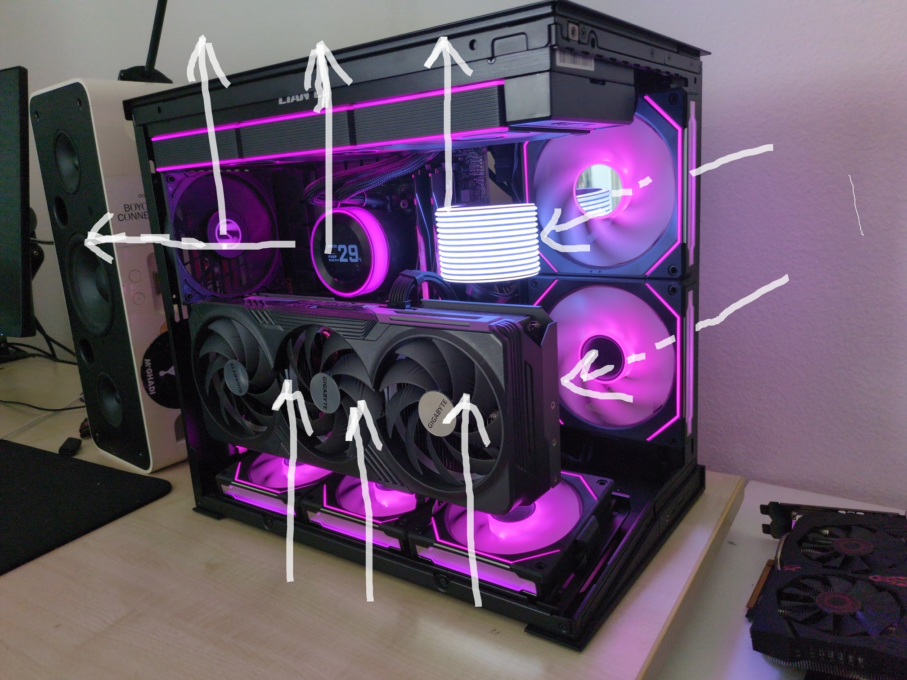

project 08 · systems & hardware
Custom Workstation Build
Overview
A high-end gaming and workhorse machine I planned, sourced, and assembled from scratch — every component chosen for compatibility, thermals, and the kind of sustained load my other projects throw at it (ML inference, VMs, GPU-passthrough labs). It doubles as the rig the rest of this portfolio is built and tested on.
Specs
| CPU | AMD Ryzen 9 9950X3D — 16-core, 3D V-Cache |
| GPU | GIGABYTE GeForce RTX 4090 (vertically mounted) |
| Motherboard | ASUS TUF Gaming B650-Plus WiFi |
| Memory | G.Skill 32 GB DDR5-6400 |
| Cooling | Lian Li 360 mm AIO (LCD pump head) + 7 sets of fans |
| Case | Lian Li dual-chamber chassis |
Gallery



What went into it
- Component selection: matching CPU, board, memory and cooling for compatibility and headroom — VRM/board choice for the 9950X3D, DDR5-6400 on the QVL, and a 360 mm AIO sized to the chassis.
- Thermal & airflow planning: laying out seven fan positions into a coherent intake/exhaust path, with the radiator and GPU placed to keep the 4090 fed with cool air under load.
- Assembly & cable management: full build from bare case — standoffs, mounting, vertical GPU riser, AIO install, and routing for a clean back-chamber.
- Bring-up & validation: first boot, BIOS/EXPO memory configuration, and thermal/stability testing under sustained CPU and GPU load to confirm the cooling holds.
Why it's here
Beyond being a personal build, it's the foundation the rest of my work runs on — the host for the GPU-passthrough lab, the compute behind the computer-vision and ML experiments, and a practical grounding in PC hardware, thermals, and systems assembly that complements the software side of everything else in this portfolio.